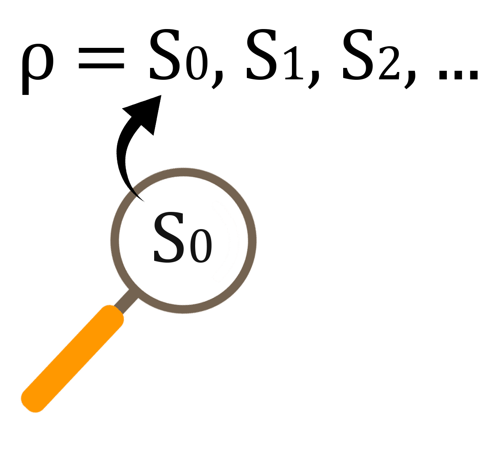
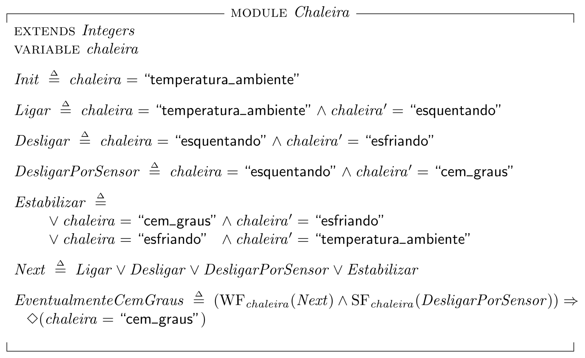

Propriedades podem ser propriedades de segurança (safety properties), vivacidade (liveness properties) ou uma combinação das duas.
"Algo ruim não acontece"
Descreve algo específico. Basta esse algo acontecer uma única vez para que a propriedade seja violada.
Exemplos:
Definição
Invariantes são um tipo de propriedade de segurança.
Uma invariante é uma propriedade sobre um estado, não sobre uma execução. Uma invariante não consegue "ver além" de um único estado.
Uma execução satisfaz uma invariante sse cada estado
da execução satisfaz a invariante.
Uma estrutura de Kripke satisfaz uma invariante sse
cada estado alcançável satisfaz a invariante.
Representação

"Algo bom eventualmente acontece"
\(\Diamond F\)
Exemplos:
Lembrando que em Quint e TLA+ usamos LTL, não CTL. Portanto, as fórmulas devem ser verdadeiras em todas as execuções.
"Eventualmente, algo é satisfeito pra sempre"
\(\Diamond\square F\)
Exemplos:
Uma forma alternativa de mostrar que "coisas boas acontecem" em Quint é através de runs.
run pode definir uma ou mais
execuções onde algo acontece.
Por exemplo, se queremos saber se é possível, em algum cenário, chegar em consenso. Podemos definir uma run semelhante a:
Propriedades de razoabilidade (Fairness properties)
Razoabilidade incondicional (Unconditional fairness): "Algo acontece com frequência infinita"
Usamos essas propriedades como pré-condições para descartar execuções não realistas.
Primeiramente, precisamos definir passos balbuciantes (stuttering steps): são aqueles em que o valor de uma variável ou de um conjunto de váriáveis não se altera.
x' = x é um passo
balbuciante para a variável x.Operador enabled (ativado):
enabled(A) em Quint) para uma ação \(A\) é verdadeiro em um estado \(s\) sse é possível fazer um passo \(A\) a partir de \(s\).Seguem definições precisas copiadas do meu TCC (traduzidas do livro do Lamport (LAMPORT, 2002)).
A razoabilidade fraca para uma fórmula de estado \(f\) e uma ação \(A\) é escrita como \(WF_f (A)\).
A conjunção com \((f' \neq f)\), expressada com a notação \(\langle A\rangle_f\), se deve ao fato de não ser desejável exigir que passos balbuciantes eventualmente ocorram.
A razoabilidade fraca recebe a denominação "fraca" porque exige que uma ação permaneça continuamente ativável para garantir a ocorrência de um passo que a satisfaça.
A razoabilidade forte para uma fórmula de estado \(f\) e uma ação \(A\) é escrita como \(SF_f (A)\).
Usamos fairness para "excluir" cenários que não são realistas mas podem causar loops no modelo.
O Apalache atualmente tem algumas limitações para fórmulas temporais, então vamos usar o TLC.
O Quint ainda não está completamente integrado ao TLC. Para usar
Quint com TLC, temos um script check_with_tlc.sh no repositório do Quint.
Vamos usar somente TLA+ nos testes da aula de hoje. De qualquer forma, veremos as sintaxes nas duas linguagens.
\(\square F\), Sempre, Always:
[]F (TLA+)always(F) (Quint)\(\Diamond F\), Eventualmente, Finalmente:
<>F (TLA+)eventually(F) (Quint)Razoabilidade forte e fraca (weak fairness e strong
fairness) de uma ação A exigindo
mudanças nas variáveis vars
WF_<vars>(A) e SF_<vars>(A) (TLA+)weakFair(A, vars) e strongFair(A, vars) (Quint*)TLA+ também define o operador temporal ~> lido com leads to.
F ~> G determina que, sempre que F
é verdade, G deve ser verdade eventualmenteNão existe leads to em Quint, mas podemos definir a versão equivalente:
always(F implies eventually(Q))PS: Não confundir com until ou release da lógica temporal.
Em Quint (instável):
quint verify --temporal minha_propriedade arquivo.qnt
temporal
temporal minha_propriedade = eventually(true)Em TLA+ (com TLC):
No arquivo .cfg, adicionar:
PROPERTY
MinhaPropriedadeDepois, só rodar o model checker normalmente.
Vamos verificar duas propriedades temporais para a especificação dos semáforos.
EventualmenteAbre == WF_<<cores>>(Next) =>
\A s \in SEMAFOROS : <>(cores[s] = "verde")
SeAbriuVaiFechar == WF_<<cores>>(Next) =>
\A s \in SEMAFOROS : (cores[s] = "verde" ~> cores[s] = "vermelho")